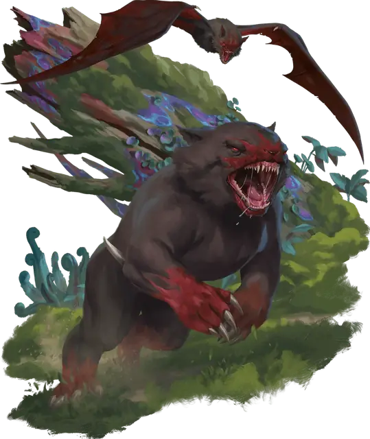

Зверь Малара
Beast of Malar
Среднее Чудовище, Хаотичное Злое

Класс Защиты 17 Инициатива +7 (17)
Хиты 168 (16к8 + 96)
Скорость 50 футов, Плавания 40 футов (только в морской форме), Полёта 60 футов (только в небесной форме), Копания 40 футов (только в земной форме)
| мод | спас | ||
|---|---|---|---|
| СИЛ | 21 | +5 | +9 |
| ЛОВ | 16 | +3 | +3 |
| ТЕЛ | 23 | +6 | +6 |
| мод | спас | ||
|---|---|---|---|
| ИНТ | 10 | +0 | +0 |
| МДР | 14 | +2 | +2 |
| ХАР | 12 | +1 | +1 |
Иммунитеты Испуганный, Очарованный
Чувства Тёмное зрение 60 футов, пассивное Восприятие 20
Языки понимает Общий, но не говорит
Опасность 11 (7 200 опыта; БВ +4)
Особенности
Амфибия (только в морской форме). Зверь может дышать как воздухом, так и под водой.
Божественное бессмертие. Когда зверь умирает, его тело растворяется чёрной слизью и спустя 1к10 дней заново возрождается со всеми Хитами в месте по выбору Малара.
Легендарное сопротивление (3/день). Если зверь проваливает спасбросок, он вместо этого может преуспеть в нём.
Сопротивление магии. Зверь совершает с Преимуществом спасброски от заклинаний и прочих магических эффектов.
Регенерация. Зверь восстанавливает 20 Хитов в начале каждого своего хода. Когда зверь получает урон Излучением или от Критического попадания, в следующий ход зверя эта особенность не срабатывает. Зверь умирает, только если начинает свой ход с 0 Хитов и не может регенерировать.
Действия
Мультиатака. Зверь совершает три атаки Укусом или Когтями в любой комбинации.
Укус. Бросок рукопашной атаки: +9, досягаемость 5 фт. Попадание: 23 (4к8 + 5) Колющего урона.
Когти (только в земной или небесной форме). Бросок рукопашной атаки: +9, досягаемость 5 фт. Попадание: 18 (3к8 + 5) Рубящего урона. Если цель — существо Большого размера или меньше, она Опрокидывается.
Бонусные действия
Живительное перевоплощение. Зверь перевоплощается в земную, морскую или небесную форму и восстанавливает 9 (2к8) Хитов. Его статистика не меняется в зависимости от формы, если не указано обратного. Любое снаряжение, которое он носит или несёт, не трансформируется.
Бонус мастерства +4
Среда обитания Леса, Прибрежье, Холмы
Сокровища Отсутствуют
Зверь Малара
Свирепый, меняющий формы хищник
Малар, бог звериной охоты, порой облекает искру первобытного хищничества в живую плоть: так рождается зверь Малара. Зверь Малара способен принимать три обличья — земное, морское и небесное, — чтобы преследовать добычу на суше, в воде и в воздухе. В каждом обличье его короткая шерсть лоснится чёрным блеском, а вокруг пасти и на когтях отливает красным, словно на ней запеклась пролитая кровь.
Какую бы форму ни принимал зверь — будь то подобие летучей мыши, росомахи или акулы, — выглядит он неизменно мускулистым и неестественным; спутать его с обычным зверем невозможно. Зверь Малара легко переходит из обличья в обличье, настигая добычу в том теле, которое лучше подходит, чтобы поймать и убить её.
Обычно в мире существует лишь один зверь Малара. Однако сам Малар может сотворить и нескольких, чтобы загнать легендарную добычу или просто явить миру свою необычайную свирепость.